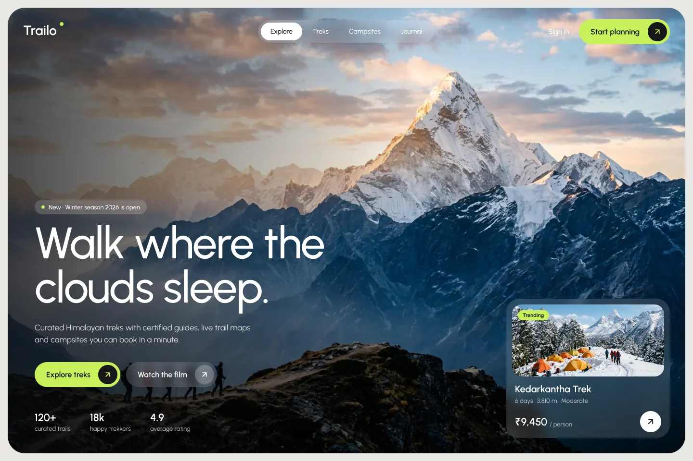
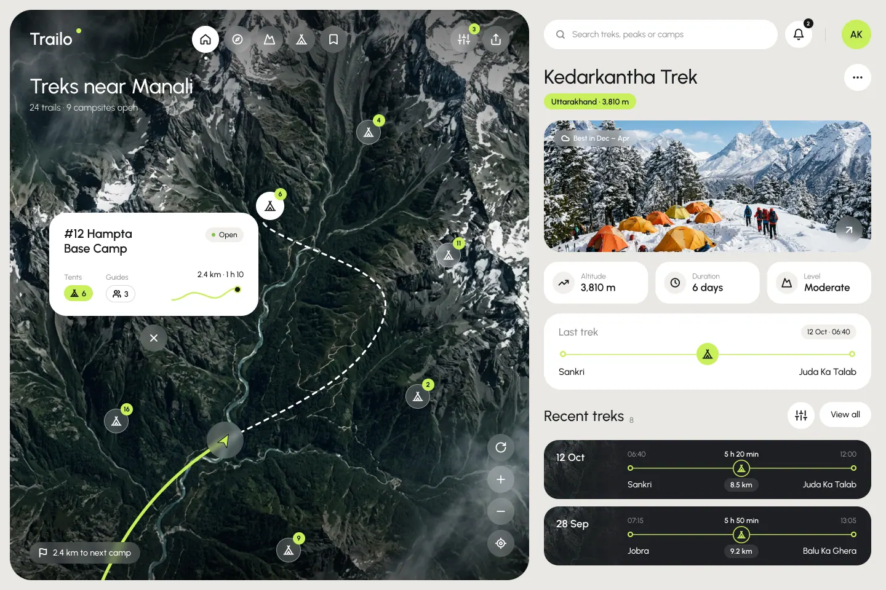
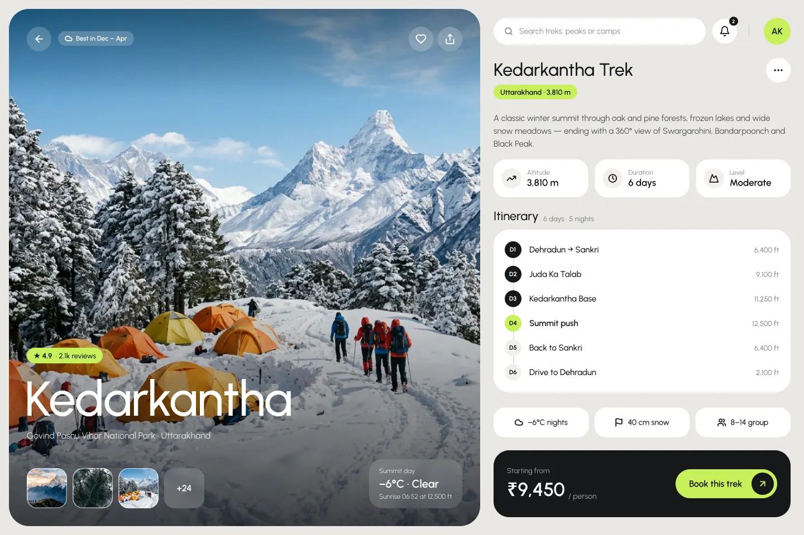
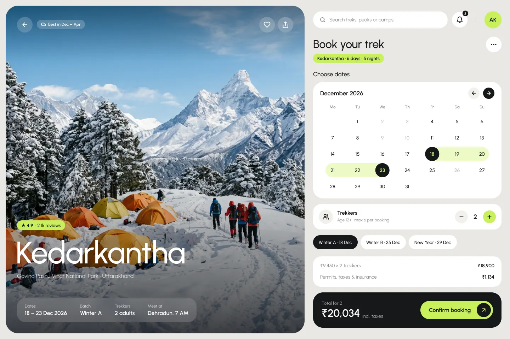
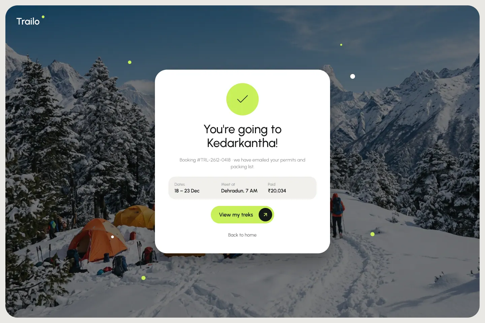
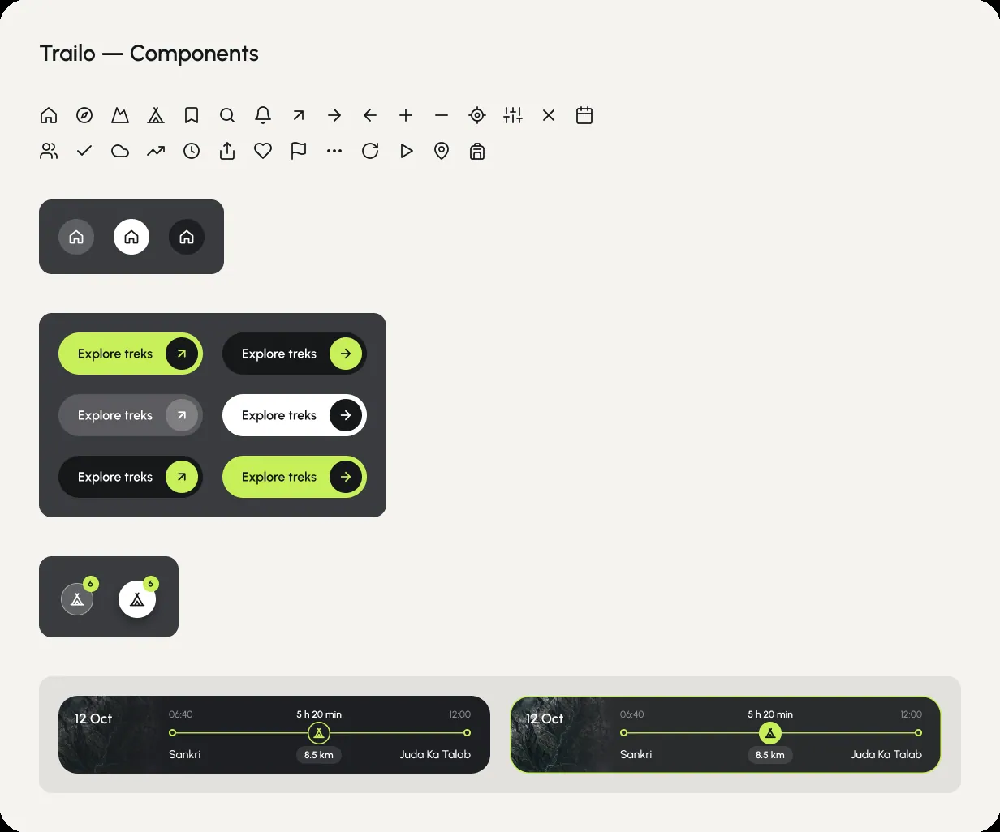

TrailoTrek booking platform
Walk where the clouds sleep. - Trek booking platform UI/UX case study
Discover Himalayan treks on a map, check the route and book a date, all in one smooth flow.

01Overview
Discover Himalayan treks on a map, check the route and book a date, all in one smooth flow.
Trailo helps trekkers discover and book guided Himalayan treks. I designed the experience from the cinematic home screen to a map-based explorer, trek details with itinerary, a date and group booking step and the confirmation.
02The challenge
What had to be solved
Trek details are complex: altitude, distance, difficulty, season and itinerary. Most booking sites bury this in long text, and people book the wrong trek for their fitness.
Design goals
- Make discovery visual and map-based
- Show difficulty, altitude and days at a glance
- Keep booking to one panel
- Celebrate the booking
03Process
How I approached it
- Cinematic homeA full-screen mountain hero with a featured trek card.
- Map explorerSatellite map with trek pins and a side panel of trek cards.
- Facts as chipsAltitude, days and difficulty as quick chips above the itinerary.
- Booking side panelCalendar, group size and price in one panel next to the trek.
04Home
A first screen that makes you want to go.
A sunrise peak, one clear message and a featured trek with price.
05Map explorer
Find treks where they actually are.
Pins on a satellite map show nearby treks; the side panel lists them with key facts.

06Trek detail
The facts that decide the trip.
Altitude, duration, difficulty and a day-by-day itinerary, with weather and the next step pinned.

07Booking and confirmation
Pick a date, add your group, done.
A calendar, group size and price breakdown in one panel, followed by a celebratory confirmation.


08Components
A small, consistent kit.
Icons, pill buttons and trek cards designed as reusable components.

09Decisions
Key design decisions
Treks are places, so the map is the primary way to browse rather than a hidden view.
A bright lime accent stays readable over photography and dark panels.
Booking happens in a side panel next to the trek, so users never lose context.
10Design system
Visual language
Dark glass panels over full-bleed mountain photography, with an energetic lime accent and rounded pill buttons.
TypeModern geometric sans-serif
11Outcome
What was delivered
Trailo turns trek discovery into a visual, map-based experience and keeps booking to three quick steps.
If the project continues, next I would:
- Add a fitness self-check before booking
- Design guide profiles
- Create a mobile app version
Next project
BACIXSweat-proof tees, sold with confidence.View project